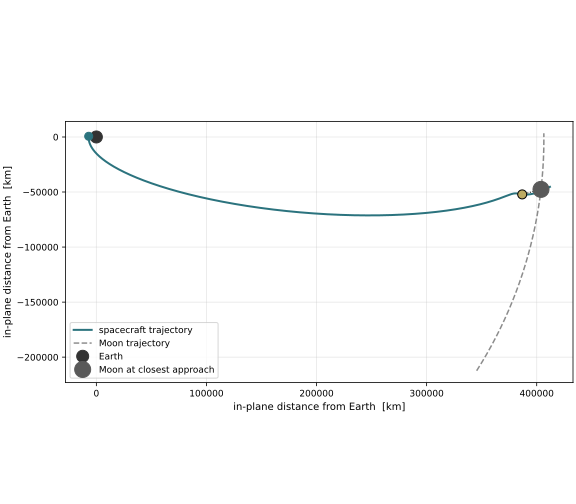
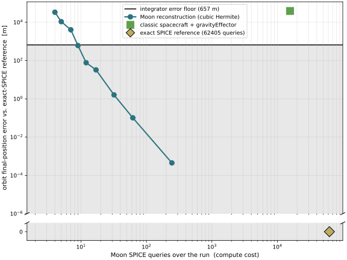
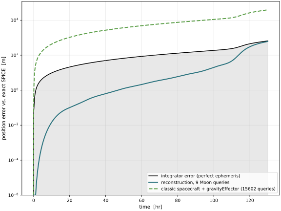

scenarioSpiceReconstruction
Overview
An example of the SpiceInterface ephemeris reconstruction feature (see Optimizing performance when using SPICE), on a cislunar transfer that is targeted for a deep lunar flyby: the transfer apogee is aimed at the Moon and pulled slightly short, so the spacecraft passes about 18000 km from the Moon, well inside its sphere of influence, and its trajectory is sharply bent by the encounter. That makes the Moon’s position the dominant driver of the orbit, so how it is supplied to the gravity model is a significant accuracy knob. The scenario shows that reconstruction trades SPICE queries for accuracy, and that below the integrator’s own error the trade is free.
The reference solution every error is measured against is exact SPICE queried at every RK4 sub-step, run on an MJScene dynamics task (the most accurate and most expensive option). Against it the scenario compares:
Reconstruction sweep: the Moon position reconstructed from a coarse knot grid, sweeping
knotStepto trace error versus SPICE query count.Default spacecraft setup: a classic C++ Module: spacecraft with C++ Module: gravityEffector, where C++ Module: spiceInterface is queried at the task rate and C++ Module: gravityEffector linearly extrapolates the Moon across the sub-steps.
Even with a perfect ephemeris the RK4 integrator has its own truncation error at the study step.
The scenario measures it by rerunning the exact-SPICE case at a much finer step (REFERENCE_DT),
treating that as converged truth, and taking the difference: whatever error the study-step run still
carries is the integrator’s. Reconstruction error below this level is masked by it and does not
change the orbit, which is what makes coarsening the knot grid free down to that point.
Run with:
python3 scenarioSpiceReconstruction.py
Illustration of Results
The first figure is the trajectory itself, projected onto the plane of the transfer. It plots the spacecraft path and the Moon’s path over the same leg, with the closest-approach points marked. The spacecraft coasts out from perigee, turns around about 18000 km from the Moon, and its arc is visibly bent by the encounter. This is the setup for everything that follows: because the flyby dominates the final state, the Moon’s position is the quantity the answer is most sensitive to, so how often and how accurately it is supplied to the gravity model is what the rest of the study measures.
{kind=link}

The second figure is the accuracy-vs-cost tradeoff. The x-axis is the number of SPICE queries the Moon costs over the whole run (compute cost); the y-axis is the resulting error in the final spacecraft position, measured against the exact-SPICE reference. Each blue point is one reconstruction run at a different knot spacing: coarser grids sit to the left (fewer queries, more error). The horizontal line is the integrator’s own error at this step size, and the shaded band below it is the “free” zone, where reconstruction error is smaller than the integrator error and so does not change the orbit. The reconstruction curve drops into that band after only a few tens of queries, so coarsening the grid further buys nothing. For comparison, the exact-SPICE reference sits at the far right at its full query cost (zero error by definition, on the broken “0” tick), and the C++ Module: spacecraft + C++ Module: gravityEffector default sits above the band: a handful of reconstruction knots is both cheaper and more accurate than that default behaviour.
{kind=link}

The third figure shows the position error buildup against time for three cases: the integrator error (the black curve, the run with a perfect ephemeris, which grows over the leg and jumps at the flyby), one cheap reconstruction taken from the free zone of the second figure, and the C++ Module: spacecraft default. The shaded region is again the free zone, now time-varying because the integrator error grows. The reconstruction stays inside that zone for nearly the whole leg on a handful of Moon queries, while the C++ Module: spacecraft default climbs above it early in the coast and grows to tens of kilometres.
{kind=link}

Does it actually save wall-clock time? The scenario prints the runtime of each run. The cleanest way to read the effect is to hold the dynamics engine fixed and vary only SPICE: the classic C++ Module: spacecraft + C++ Module: gravityEffector path with exact SPICE (one Moon query per step) versus the same path with Moon-position reconstruction. On the author’s machine, collapsing the Moon queries from ~15600 to a handful cuts the classic-path runtime by roughly 5%. On the MJScene dynamics task the saving is larger, on the order of 10%, because that path queries SPICE four times per step (once per RK4 stage) rather than once, so SPICE is a bigger share of the step.
- scenarioSpiceReconstruction.moonFlybyInitialState(muEarth, rEq)[source]
Initial state of a transfer from a 600 km perigee out to a lunar flyby.
The transfer apogee is aimed at where the Moon will be when the spacecraft arrives, in the Moon’s orbit plane, then pulled short by
APOGEE_FRACTIONso the spacecraft turns around a controlled distance from the Moon rather than hitting it. The Moon state comes straight from SPICE (spkezr_c); the time of flight is the perigee-to-apogee half period, iterated to self-consistency because the apogee radius depends on where the Moon is at arrival. Returns the inertial (position, velocity) at perigee.
- scenarioSpiceReconstruction.plotAccuracyVsCost(sweep, errClassic, integratorFloor, nQExact, nQClassic)[source]
Figure 2: the accuracy-vs-cost tradeoff, with the references + integrator floor marked.
- scenarioSpiceReconstruction.plotErrorOverTime(tTruth, posTruth, integratorFloor_t, tR, posR, nQGood, tClassic, posClassic, nQClassic, errClassic)[source]
Figure 3: error over time for a well-chosen reconstruction, the classic default, and the integrator error itself (the run with a perfect ephemeris).
- scenarioSpiceReconstruction.plotTrajectory(posTruth, moonTruth)[source]
Figure 1: the cislunar transfer in 2D, with the Moon that perturbs it.
Both Earth-centred trajectories are projected onto the plane that best contains the spacecraft path (its two dominant principal directions) so the flyby geometry is planar and the deflection is easy to see, and the closest-approach point is marked on both paths.
- scenarioSpiceReconstruction.run(show_plots=True)[source]
Run the reconstruction accuracy-vs-cost study and produce its three figures.
- Parameters:
show_plots (bool) – display the figures.
- Returns:
(errClassic, figureList)wherefigureListmaps figure name to Figure.- Return type:
tuple
- scenarioSpiceReconstruction.runClassicSpacecraft(rN, vN, dt, knotStep=None, record=False)[source]
Propagate the same orbit with a classic Spacecraft and gravityEffector on a regular task at step
dt: SpiceInterface runs once per step and gravityEffector linearly extrapolates the Moon across the sub-steps.knotStep(nanoseconds), if given, reconstructs the Moon position on that knot grid instead of querying exact SPICE every step (same engine, SPICE the only change, for the apples-to-apples runtime comparison). Returns (final position, Moon query count, optional [times, spacecraft positions]).
- scenarioSpiceReconstruction.runMJScene(rN, vN, dt, knotStep=None, record=False)[source]
Propagate the cislunar orbit in an MJScene dynamics task with Earth (central) + Moon third body at RK4 step
dt.knotStep(nanoseconds), if given, reconstructs the Moon position with cubic Hermite on that knot grid; otherwise the Moon is queried exactly at every RK4 sub-step. Returns (final position, Moon SPICE query count, optional [times, spacecraft positions, Moon positions]).